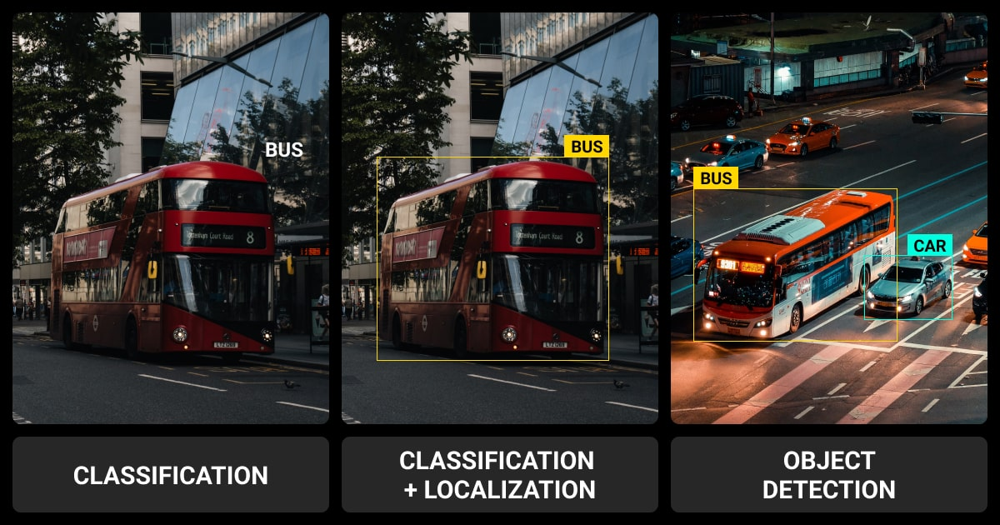
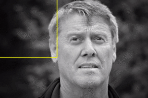
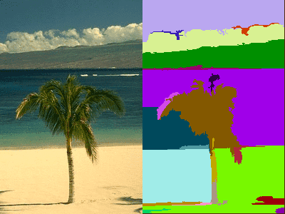
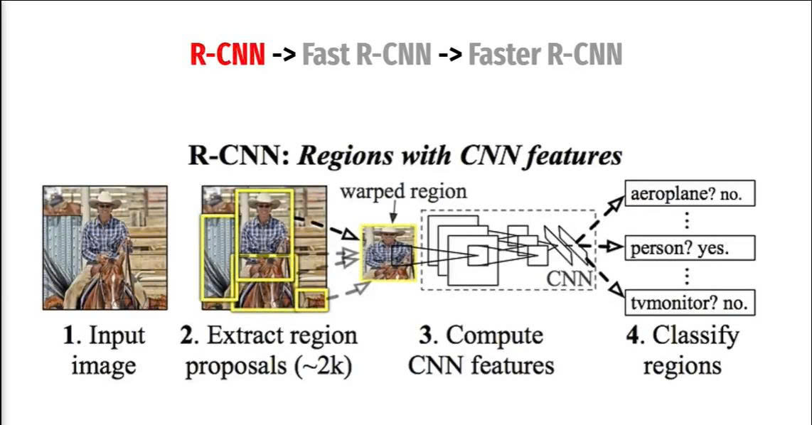
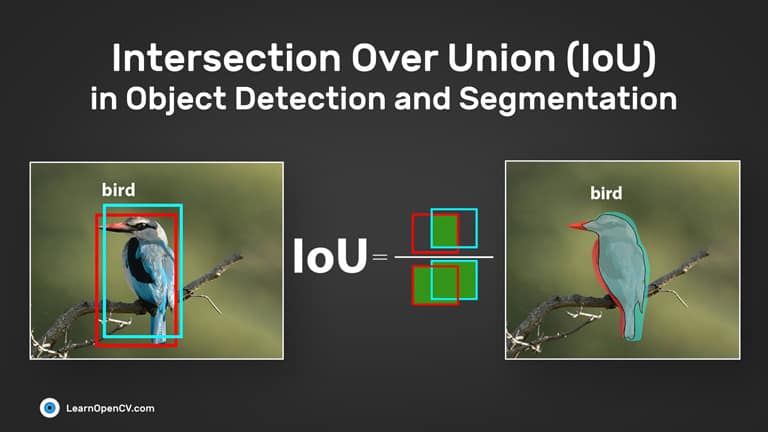
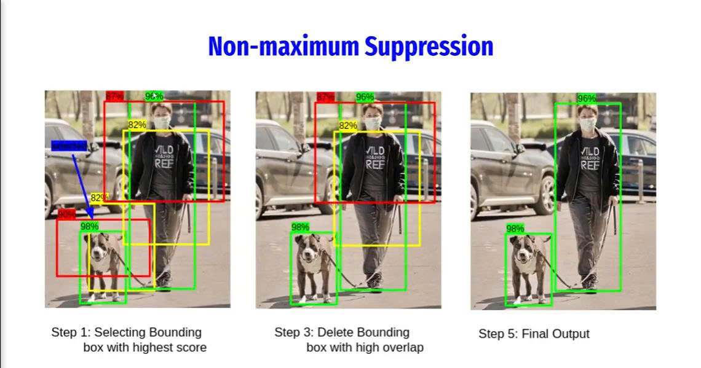

I. Bài toán Object Detection là gì?
Trong thị giác máy tính, bài toán Object Detection (phát hiện đối tượng) là sự kết hợp của hai bài toán con tưởng chừng độc lập nhưng lại có mối liên hệ chặt chẽ với nhau:
- Định vị đối tượng (Localization): Xác định vị trí của đối tượng trong ảnh. Vị trí này thường được biểu diễn bằng một bounding box – một hình chữ nhật bao quanh đối tượng, được mô tả bởi 4 tham số \((x, y, w, h)\) hoặc \((x_1, y_1, x_2, y_2)\): toạ độ góc trên-trái và kích thước chiều rộng, chiều cao (hoặc toạ độ góc dưới-phải).
- Phân loại đối tượng (Classification): Trả lời câu hỏi "đối tượng trong bounding box đó là cái gì?" – ví dụ: chó, mèo, xe hơi, người… Trong nhiều hệ thống, còn có thêm một lớp đặc biệt là background (nền) để chỉ rằng vùng đó không chứa đối tượng nào cả.
Hình 1: Sự khác biệt giữa Classification, Localization và Object Detection.

Nói cách khác, output của một mô hình Object Detection không chỉ là một nhãn duy nhất cho toàn bộ bức ảnh (như Classification thuần), mà là một danh sách các bounding box, mỗi bounding box đi kèm với một nhãn lớp và một độ tin cậy (confidence score):
Trong đó \(b_i\) là bounding box thứ \(i\), \(c_i\) là nhãn lớp và \(s_i \in [0,1]\) là độ tin cậy (xác suất) mà mô hình gán cho dự đoán đó.
Điểm khó của bài toán này nằm ở chỗ: số lượng đối tượng trong ảnh là không biết trước, kích thước và tỉ lệ của các đối tượng có thể rất khác nhau (từ một chiếc xe tải lớn đến một con chim nhỏ ở xa), chúng có thể chồng lấn lên nhau (occlusion), và bị ảnh hưởng bởi điều kiện ánh sáng, góc chụp, và chất lượng ảnh.
II. Bài toán với một đối tượng (Single Object Detection)
Trường hợp đơn giản nhất là khi trong ảnh chỉ có duy nhất một đối tượng cần phát hiện. Về bản chất, ta có thể xem đây là bài toán Multi-task Learning – mô hình cần thực hiện hai bài toán là bài toán phân loại đối tượng và toán ước lượng vị trí của đối tượng trong ảnh
- Loss cho Localization: Hàm loss này được dùng để cải thiện sai số giữa bounding box thực tế và bounding box dự đoán.
- Loss cho Classification: dùng Cross-Entropy loss cho bài toán phân loại đối tượng.
Trong đó \(\lambda_{\text{loc}}\), \(\lambda_{\text{cls}}\) là các hệ số cân bằng đóng góp giữa hai loại loss (thường được chọn thủ công hoặc học được).
Nhược điểm lớn nhất của cách tiếp cận này là nó chỉ hoạt động khi biết chắc trong ảnh chỉ có một đối tượng. Trong thực tế, hầu hết các bức ảnh đều chứa nhiều đối tượng, và ta không thể áp dụng trực tiếp mô hình này.
III. Bài toán với nhiều đối tượng (Multiple Object Detection)
Trong thực tế thì chúng ta rất hiếm khi thấy 1 bức ảnh có 1 đối tượng bên trong. Bức ảnh có thể gồm nhiều đối tượng và khi đó đầu ra bài toán của chúng ta sẽ là dự đoán ra nhiều đối tượng trong 1 khung ảnh. Vậy làm sao để mô hình có thể "tìm" ra đâu là những vùng chứa đối tượng và phân loại chúng? và làm sao tận dụng được sức mạnh của các mô hình image classification cho bài toán object detection? đây chính là vấn đề chúng ta sẽ xử lý trong bài toán object detection
a. Xử dụng cửa sổ trượt (Sliding Window)
Ý tưởng đơn giản nhất để tìm đối tượng trong ảnh là: trượt một cửa sổ có kích thước cố định qua toàn bộ bức ảnh, tại mỗi vị trí, ta cắt vùng ảnh tương ứng ra và đưa vào một mô hình phân loại (Classifier). Khi này từ bài toán phát hiện đối tượng, bài toán của chúng ta sẽ chuyển sang bài toán image classification. Nếu mô hình dự đoán vùng đó chứa một đối tượng (ví dụ: "mèo") với xác suất cao, ta ghi nhận lại vị trí đó như một phát hiện tiềm năng.
Để xử lý các đối tượng có kích thước khác nhau, ta phải sử dụng nhiều kích thước cửa sổ khác nhau (scale pyramid). Ngoài ra, nếu bước trượt (stride) quá lớn thì sẽ bỏ sót đối tượng, còn nếu quá nhỏ thì số lượng vùng cần phân loại sẽ bùng nổ.
Hình 2: Sliding Window quét qua ảnh.

Giả sử ảnh có kích thước \(H \times W\). Với một cửa sổ kích thước \(k \times k\) và stride \(s\), số lượng vị trí cửa sổ cần quét là:
Ví dụ với ảnh \(800 \times 600\), cửa sổ \(100 \times 100\), stride \(s = 20\), ta có:
Chỉ với một kích thước cửa sổ đã gần 1000 vùng cần phân loại. Nếu dùng 5 tỉ lệ kích thước khác nhau, số vùng tăng lên gần 5000. Mỗi vùng phải chạy qua một mạng CNN (như AlexNet) để phân loại, nghĩa là hàng nghìn lần forward cho một bức ảnh. Đây là lý do Sliding Window có chi phí tính toán cực kỳ lớn và hầu như không dùng được trong thực tế với các mô hình deep learning.
Nhược điểm của Sliding Window:
- Chi phí tính toán khổng lồ: Hàng nghìn đến hàng chục nghìn vùng phải xử lý cho mỗi ảnh.
- Không linh hoạt về tỉ lệ: Phải thử rất nhiều kích thước cửa sổ, dẫn đến việc dư thừa.
- Bỏ sót đối tượng có tỉ lệ khác thường: Ví dụ một con rắn nằm ngang hoặc một cái thang dài.
- Rất nhiều false positive: Vì mọi vùng đều được phân loại độc lập, nên sẽ có nhiều vùng trùng lặp cùng được dự đoán.
Chính vì những hạn chế này, các nhà nghiên cứu đã tìm cách giảm số lượng vùng đề xuất bằng cách khai thác thông tin trong chính bức ảnh – dẫn đến sự ra đời của Selective Search.
b. Selective Search
Ý tưởng đơn giản đó là nếu chúng ta có thể lọc ra các vùng có khả năng có đối tượng cao thì có phải là sẽ giảm thời gian tính toán toán và độ chính xác sẽ cao hơn nhiều hay không và đó chính là ý tưởng mà Selective Search và region proposer ra đời. Region proposer được định nghĩa là vùng có khả năng chứa object. Selective Search dựa trên đặc trưng thị giác cấp thấp (màu sắc, kết cấu, kích thước, mức độ chồng lấn) để hợp nhất dần các vùng ảnh nhỏ thành các vùng lớn có ý nghĩa, tạo ra khoảng 2000 vùng đề xuất (region proposals) chất lượng cao hơn nhiều so với Sliding Window.
Cách mà Selective Search hoạt động:
- Khởi tạo: Đầu tiên, ta dùng một thuật toán phân vùng ảnh để chia bức ảnh thành nhiều mảnh nhỏ, sao cho mỗi mảnh là một vùng có màu sắc và kết cấu tương đối đồng nhất. Có thể hình dung giống như việc ta tô màu: những điểm ảnh gần giống nhau về màu sẽ được gom lại thành một mảnh, còn chỗ nào có sự thay đổi rõ rệt thì bị cắt ra thành hai mảnh khác nhau. Kết quả là ta có hàng trăm mảnh nhỏ ban đầu, mỗi mảnh là một "ứng viên" tiềm năng để sau này hợp nhất lại thành các vùng lớn hơn.
- Tính độ tương đồng: Với mỗi cặp vùng kề nhau, tính 4 loại tương đồng:
- Màu sắc (Color): So sánh histogram màu của hai vùng.
- Kết cấu (Texture): So sánh histogram gradient (SIFT-like).
- Kích thước (Size): Ưu tiên hợp nhất các vùng nhỏ trước.
- Độ chồng lấn (Fill): Ưu tiên các vùng có hình dạng "khít" với bounding box của chúng.
\[ S(a, b) = w_1 S_{\text{color}}(a,b) + w_2 S_{\text{texture}}(a,b) + w_3 S_{\text{size}}(a,b) + w_4 S_{\text{fill}}(a,b) \] - Hợp nhất: Chọn cặp vùng có \(S(a,b)\) lớn nhất, gộp chúng lại thành một vùng mới. Cập nhật lại tương đồng với các vùng kề.
- Lặp lại: Lặp bước 3 cho đến khi toàn bộ ảnh trở thành một vùng duy nhất. Trong suốt quá trình, mỗi vùng được tạo ra đều được ghi lại làm một region proposal.
Hình 3: Selective Search hợp nhất dần các vùng nhỏ thành các vùng lớn có ý nghĩa.

Kết quả cuối cùng: Selective Search tạo ra các vùng đề xuất cho mỗi ảnh, bao phủ hầu hết các đối tượng có thể có, với đủ kích thước và tỉ lệ khác nhau.
Selective Search không học (không có tham số được tối ưu bằng gradient descent) – nó là một thuật toán thị giác máy tính cổ điển kết hợp màu sắc, kết cấu, và hình học. Đây chính là "region proposer" được dùng trong phiên bản R-CNN đầu tiên.
III. R-CNN (Region-based Convolutional Neural Network)
Thuật toán R-CNN – một bước ngoặt lớn của Object Detection, khi lần đầu tiên áp dụng thành công CNN để giải quyết bài toán phát hiên vật thể
Hình 4: Kiến trúc R-CNN: Selective Search → Warp → CNN → SVM + Bounding Box Regression.

Kiến trúc R-CNN gồm 4 bước chính:
- Region Proposal: Dùng Selective Search để sinh ra khoảng 2000 vùng đề xuất (region proposals) vùng khả năng chứa đối tượng cho mỗi ảnh.
- Resize: Vì các vùng đề xuất có kích thước và tỉ lệ khác nhau, mà đầu vào CNN (ví dụ AlexNet) yêu cầu kích thước cố định (như 227×227), ta phải biến đổi mỗi vùng về cùng kích thước.
- Feature Extraction: Mỗi vùng đã warp được đưa qua một CNN (như AlexNet pre-trained trên ImageNet) để trích xuất vector đặc trưng (4096 chiều với AlexNet).
- Classification + Bounding Box Regression: Vector đặc trưng được đưa qua:
- Một bộ phân loại SVM (một SVM nhị phân cho mỗi lớp) để dự đoán lớp của vùng.
- Một bộ hồi quy tuyến tính (linear regression) để tinh chỉnh lại bounding box (giảm sai số vị trí).
a. Bounding box regression:
Sau khi Selective Search tạo ra các Region Proposal đề xuất ra các vùng có khả năng chứa đối tượng, các vùng này thường chỉ bao quanh đại khái đối tượng chứ chưa khớp chính xác với nó. Ví dụ, một vùng đề xuất có thể bao gồm cả chú chó lẫn một phần nền xung quanh, hoặc cắt cụt mất chân sau của chú chó. Nếu ta dùng nguyên vùng đó làm kết quả cuối cùng, độ chính xác sẽ rất thấp. Bounding box regression ra đời để tinh chỉnh vùng đề xuất, kéo nó "khít" hơn với đối tượng thực sự.
Cách biểu diễn bounding box. Ta biểu diễn mỗi bounding box bằng 4 tham số: \((x, y)\) là toạ độ tâm, và \((w, h)\) là chiều rộng và chiều cao. Cách biểu diễn tâm-kích-thước này thuận tiện hơn so với toạ độ góc (x₁, y₁, x₂, y₂) vì nó tách biệt rõ ràng giữa vị trí (tâm) và kích thước (rộng, cao), giúp mạng học hai khía cạnh này độc lập với nhau.
Gọi:
- \(P = (P_x, P_y, P_w, P_h)\): vùng đề xuất (proposal) – đầu vào của bước regression.
- \(G = (G_x, G_y, G_w, G_h)\): ground truth – bounding box đúng mà ta muốn hướng tới.
- \(\hat{G} = (\hat{G}_x, \hat{G}_y, \hat{G}_w, \hat{G}_h)\): bounding box dự đoán – đầu ra của mạng.
Ý tưởng cốt lõi: Thay vì bắt mạng dự đoán trực tiếp toạ độ tuyệt đối của bounding box ta chỉ cần mạng dự đoán 4 phép biến đổi nhỏ \((t_x, t_y, t_w, t_h)\) để dịch chuyển và thay đổi kích thước vùng đề xuất \(P\) thành vùng dự đoán \(\hat{G}\). Cách làm này ổn định hơn nhiều trong huấn luyện.
Giải thích từng công thức:
- Toạ độ tâm \((\hat{G}_x, \hat{G}_y)\): Ta dịch chuyển tâm của vùng đề xuất đi một khoảng bằng \(t_x\) lần chiều rộng và \(t_y\) lần chiều cao của vùng đó. Ở đây \(t_x, t_y\) được đo theo tỉ lệ so với kích thước vùng đề xuất, chứ không phải theo pixel tuyệt đối. Điều này giúp mạng bất biến với kích thước ảnh và kích thước vùng đề xuất.
- Chiều rộng và chiều cao \((\hat{G}_w, \hat{G}_h)\): Ta nhân kích thước vùng đề xuất với một hệ số tỉ lệ. Hàm \(\exp(\cdot)\) được dùng vì hai lý do: (1) đảm bảo kích thước dự đoán luôn dương (vì \(\exp(t) > 0\) với mọi \(t \in \mathbb{R}\)), và (2) biến phép nhân tỉ lệ thành phép cộng trong không gian log, giúp mạng học ổn định hơn.
Vậy mạng cần học cái gì? Mạng không học trực tiếp \((t_x, t_y, t_w, t_h)\) từ dữ liệu một cách mù quáng, mà được cung cấp nhãn mục tiêu \((t_x^*, t_y^*, t_w^*, t_h^*)\) tính từ ground truth \(G\) và vùng đề xuất \(P\) như sau:
Đây chính là phép biến đổi ngược của công thức dự đoán ở trên: nếu mạng dự đoán chính xác \(t_x = t_x^*, t_y = t_y^*, t_w = t_w^*, t_h = t_h^*\), thì \(\hat{G}\) sẽ trùng khít với \(G\). Nói cách khác, mục tiêu huấn luyện là bắt mạng dự đoán ra đúng các phép biến đổi cần thiết để biến vùng đề xuất thành ground truth.
Hàm loss: Mạng được huấn luyện để tối thiểu hoá sai số giữa dự đoán và nhãn mục tiêu. Trong R-CNN gốc, người ta dùng Ridge regression (L2 loss có regularization):
Trong đó \(d_i(P)\) là giá trị mạng dự đoán cho thành phần thứ \(i\) (chính là \(t_i\) ở trên), \(\lambda\) là hệ số regularization, và \(\mathbf{w}\) là trọng số của lớp regression. Sau này, các kiến trúc như Fast R-CNN và Faster R-CNN thay L2 bằng Smooth L1 loss để ổn định hơn khi có outlier (vùng đề xuất lệch quá xa ground truth).
Lưu ý quan trọng: Bounding box regression chỉ được huấn luyện trên các vùng đề xuất có IoU ≥ 0.6 với một ground truth, trong phần tiếp theo chúng ta sẽ cùng tìm hiểu về chỉ số IoU (positive proposals). Những vùng có IoU thấp hơn được coi là background và bị bỏ qua khi tính loss regression, vì việc "kéo" một vùng background về phía một đối tượng nào đó là vô nghĩa và sẽ làm hỏng mạng.
Bounding box regression là một kỹ thuật đơn giản nhưng cực kỳ hiệu quả: thay vì bắt mạng học toạ độ tuyệt đối, ta chỉ cần mạng học các phép biến đổi tương đối so với vùng đề xuất. Chính nhờ bước này mà các mô hình Object Detection hiện đại có thể đạt độ chính xác vị trí rất cao, kể cả khi vùng đề xuất ban đầu chỉ "đại khái" bao quanh đối tượng.
b. Chỉ số Intersection over Union (IoU)
IoU (Intersection over Union) – còn gọi là Jaccard Index – là thước đo mức độ chồng lấn giữa hai bounding box. Nó được dùng để:
- Đánh giá bounding box dự đoán khớp với ground truth đến mức nào.
- Xác định một dự đoán là True Positive hay False Positive (dựa trên ngưỡng IoU, thường là 0.5).
- Làm tiêu chí trong NMS để loại bỏ các bounding box trùng lặp.
Công thức:
Trong đó \(A\) và \(B\) là hai bounding box. IoU luôn nằm trong khoảng \([0, 1]\):
- \(\text{IoU} = 0\): hai box không chồng lấn chút nào.
- \(\text{IoU} = 1\): hai box trùng khít hoàn toàn.
- Thông thường, ngưỡng \(\text{IoU} \geq 0.5\) được coi là "khớp" (một dự đoán đúng).
Hình 5: Minh họa IoU: phần giao (Intersection) chia cho phần hợp (Union).

c. Non-Maximum Suppression (NMS)
Sau khi mô hình đưa ra dự đoán, ta thường có rất nhiều bounding box trùng lặp cho cùng một đối tượng. Ví dụ, với một chú chó trong ảnh, mô hình có thể đưa ra 20 bounding box khác nhau, tất cả đều bao quanh chú chó đó, mỗi cái với một confidence score khác nhau. Ta cần một thuật toán để giữ lại bounding box tốt nhất và loại bỏ những cái trùng lặp – đó chính là Non-Maximum Suppression.
Ý tưởng:
Nếu hai bounding box cùng chỉ về một đối tượng, chúng sẽ có IoU cao. Ta giữ lại box có confidence score cao nhất, và loại bỏ tất cả các box khác có IoU với nó vượt ngưỡng \(\text{IoU}_{\text{threshold}}\) (thường là 0.5).
Thuật toán NMS chi tiết:
- Sắp xếp tất cả bounding box theo confidence score giảm dần.
- Chọn box có score cao nhất, đưa vào danh sách kết quả (keep list).
- Loại bỏ box đó khỏi danh sách ban đầu.
- Với mỗi box còn lại, tính IoU với box vừa chọn. Nếu \(\text{IoU} > \text{threshold}\), loại bỏ box đó.
- Lặp lại bước 2–4 cho đến khi không còn box nào trong danh sách ban đầu.
Hình 6: NMS: trước (trái, nhiều box trùng) và sau (phải, chỉ giữ box tốt nhất).

IV. Đánh giá mô hình Object Detection
V. Kết luận
Object Detection là bài toán kết hợp giữa localization (định vị) và classification (phân loại). Từ bài toán đơn giản với một đối tượng, đến bài toán nhiều đối tượng, chúng ta đã đi qua các bước tiến hoá của lĩnh vực này:
- Sliding Window là ý tưởng ngây thơ đầu tiên: quét mọi vị trí, mọi tỉ lệ → quá chậm, không thực tế.
- Selective Search cải tiến bằng cách dùng đặc trưng thị giác (màu, kết cấu, kích thước, độ khít) để gợi ý khoảng 2000 vùng có khả năng chứa đối tượng.
- R-CNN là mô hình deep learning đầu tiên cho Object Detection: kết hợp Selective Search + CNN + SVM + Bounding Box Regression. Độ chính xác cao nhưng cực kỳ chậm.
- IoU là thước đo mức độ chồng lấn giữa hai bounding box, được dùng cả trong huấn luyện lẫn đánh giá.
- NMS là thuật toán hậu xử lý giúp loại bỏ các bounding box trùng lặp, giữ lại box tốt nhất cho mỗi đối tượng.
- mAP là chỉ số chuẩn để đánh giá mô hình Object Detection, được tính từ diện tích dưới đường cong Precision-Recall cho từng lớp rồi lấy trung bình.
Những kiến thức này là nền tảng để tiếp cận các kiến trúc hiện đại hơn như Fast R-CNN, Faster R-CNN, YOLO, SSD, RetinaNet, DETR… Mặc dù các kiến trúc mới đã thay thế nhiều thành phần thủ công (như Selective Search được thay bằng Region Proposal Network, SVM được thay bằng softmax), nhưng tư duy cốt lõi – region proposal, IoU, NMS, mAP – vẫn hiện diện xuyên suốt trong mọi hệ thống Object Detection hiện đại.
Bình luận